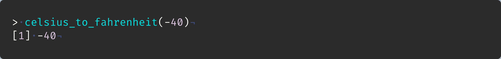
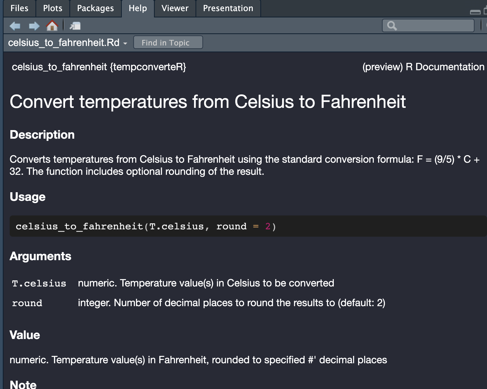

Package development
in
Shubham Dutta, Ph.D.
Senior Research Scientist
The Non Human Primate Reagent Resource
Department of Medicine, UMMS
March 14th, 2025
Why learn package development?
Install package development tools
Modify .Rprofile
Manually
The .Rprofile typically lives in these locations:
Windows:
C:/Users/YourUsername/Documents/.RprofileMac/Linux:
~/.Rprofile
Using R
Open .Rprofile
Modify .Rprofile
create_package()
Package folder structure
use_git()
The R subdirectory will contain package functions
use_r()
Our first function
Time for a test drive

Hotkey: Cmd/Ctrl + Shift + L

Workflow
check()

check()
Cmd+Shift+E(Mac) orCtrl+Shift+E(Windows/Linux)check()early and often- Reduce future pain by catching problems early
R CMD check
3 types of messages
errors
Important
- Severe problems - always fix.
warnings
Warning
- Problems that you should fix, and must fix if you’re planning to submit to CRAN.
notes
Note
- Mild problems or, in a few cases, just an observation. When submitting to CRAN, try to eliminate all NOTEs.
License information missing in the DESCRIPTION file
No License information in the DESCRIPTION file

Licenses
use_*_license()
- MIT: simple and permissive.
- Apache 2.0: MIT + provides patent protection.
- CC-BY: Free to share and adapt, must give appropriate credit.
- and many more.
use_mit_license()
The DESCRIPTION file
- Edit the
DESCRIPTIONfile manually - Use
desc1 package
Edit .Rprofile using edit_r_profile()

- Setup R profile with
usethis - Initialization at Start of an R Session
- Kevin Ushey’s blog post on .Rprofile essentials
check()
Workflow
Commit changes to git from RStudio
Commit changes to git from terminal
Use github
Put your package code on GitHub
- GitHub account
create_github_token()- follow instructionsgitcreds::gitcreds_set()- paste PATgit_sitrep()- verify
use_github() - push content to new repository on GitHub
Document code using roxygen2 package
Adds special comments (#')
Function help ?your_function
Roxygen tags
Title
Description (
@description)Parameters (
@param)Return value (
@return)Export tag (
@export)Example usage (
@examples)For internal functions (
@keywords internal)
Insert Roxygen skeleton
- Click anywhere on your code
Code>Insert roxygen skeleton
Generate code documentation using document()
Roxygen code
*.Rd file in man/
Roxygen2 and document() generates help files
?myfunction

NAMESPACE
- Lists R objects that are:
Exported from your package to be used by package users
export(),S3method(), etc.Imported from another package to be used internally by your package
import(),importFrom(), etc.
document()updates the NAMESPACE file with directives from Roxygen comments in your R code
check() again
Workflow
install() your package
install() your package
Test functions with use_testthat()
Add tests for your functions
Run tests with test()
Use external packages
Update tests
check() returns a warning
Add external packages with use_package()
check() again
use_readme_rmd()
Edit README.Rmd
build_readme()
Final steps
check()installpackage to your librarycommitandpushto Github
Summary of R package development
Run once per package
create_package()use_git()use_*_license()use_testthat()use_github()use_readme_rmd()
New functions, tests, or dependencies
use_r()use_test()use_package()
Run multiple times
load_all()document()test()check()
Review
Further reading
Software and Package development
Data analysis
Advanced R users